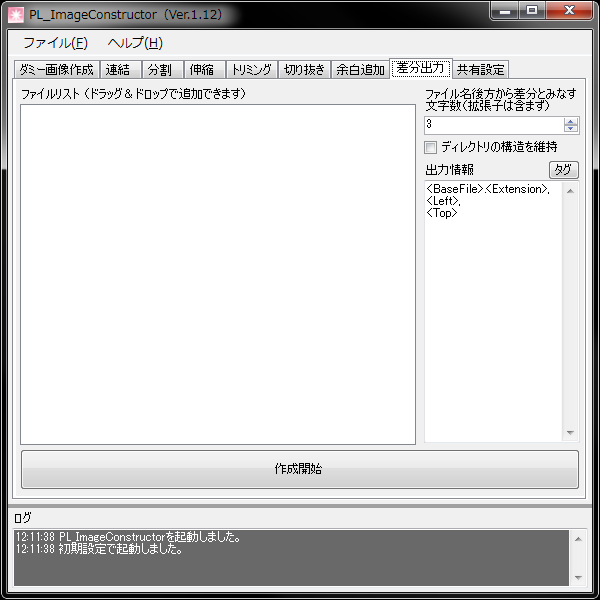

基礎なる画像と比較し、差異のある範囲の画像を出力します。
その際、個々の上方をテキストファイルとして出力する事が出来ます。
主に、立ち絵の表情差分などを切り出し、ゲームリソース容量の最適化やメモリの消耗量を削減するのに使用します。
- ファイル名後方から差分とみなす文字数（拡張子は含まず）
一括処理する際、差分ファイルと見なすファイルの範囲を指定します。
例えば、「主人公_00.png」～「主人公_06.png」までが1つのまとまりで、
「ヒロイン_00.png」～「ヒロイン_12.png」から別のまとまりであるとする場合、
ファイル名後方の数値2文字が差分指定なので「2」と指定するようにします。
- ディレクトリの構造を維持
登録されたファイルのフォルダ構成再現して出力します。
- 出力情報
画像を出力した同フォルダに、この場で指定した情報がテキストファイルとして出力されます。
空白の場合は出力しないようになります。